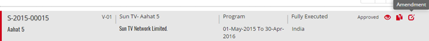


	<section>
		<article>
			<h2>Amendment<span></span></h2>
			<div>
				<p></p>

				<p>After Approval of Syndication Deal. User can do the Amendment for the same Deal with existing Data and can change/modify the existing data.</p>

				<p>Click on Amendment Button. A page Appears with Existing Data.</p>

				<div class="triangle-border top">				
					
				</div>

				<p>After Amendment Version Number will be changed as Incremental basis with existing data and Considered as new deal.</p>

				<p><b>Note:</b> The deal process will be continued as a New deal. And user can continue the same process like before approval. Refer the approval process as above</p>
				
			</div>
		</article>
	</section>